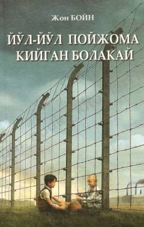

YPIkkinchi jahon urushi davridagi ikki bolaning fojiali va ta'sirli do'stlik hikoyasi.
Ikkinchi jahon urushi davrida fashistlar konslageri yaqinida yashovchi nemis bolasi va konslagerdagi yahudiy bolaning do'stligi haqidagi ta'sirli hikoya. Asar urushning dahshatli oqibatlari va insoniylik qadriyatlarini bolalar nigohi orqali ochib beradi.